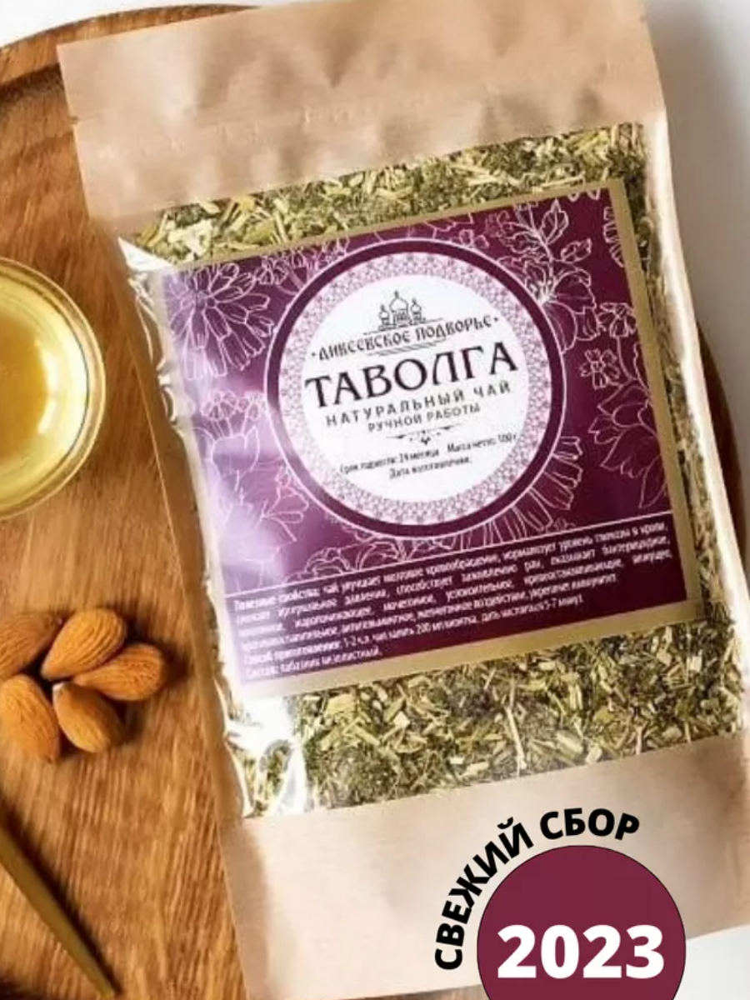
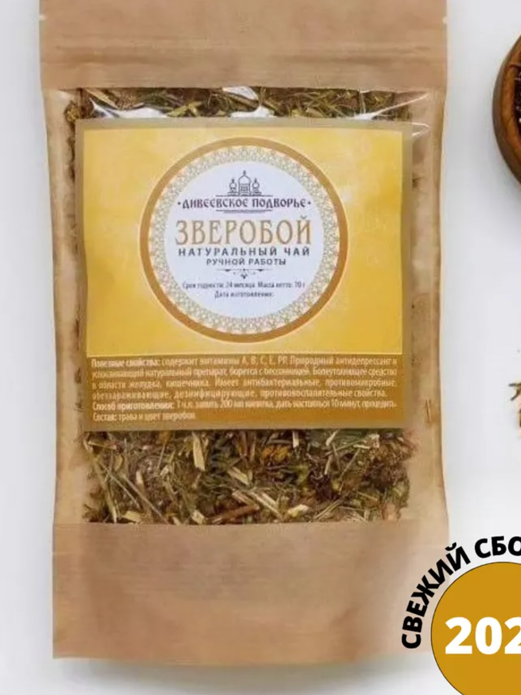
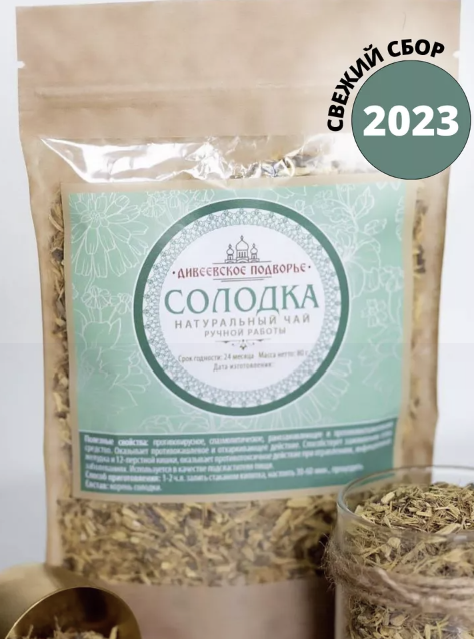
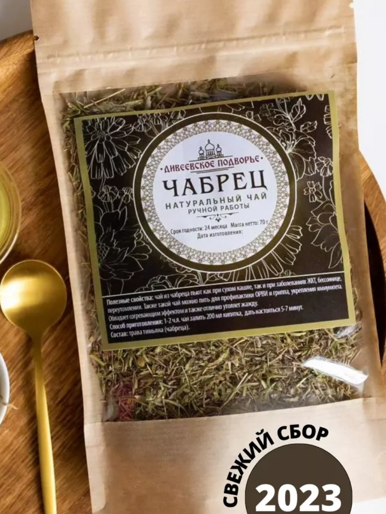
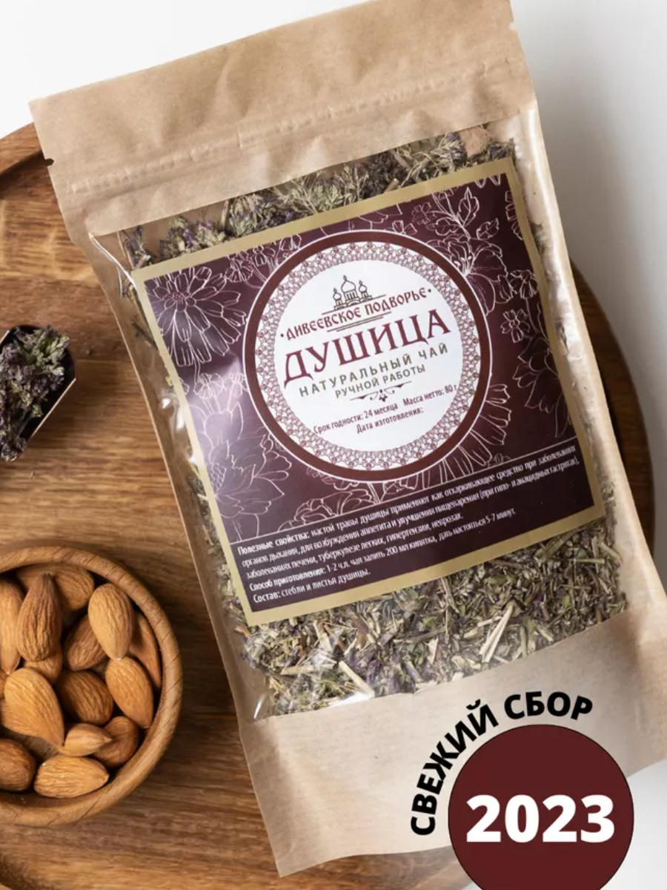
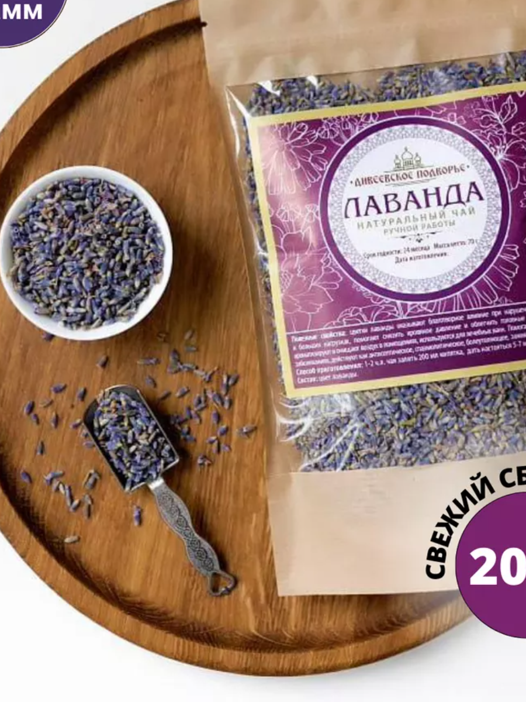
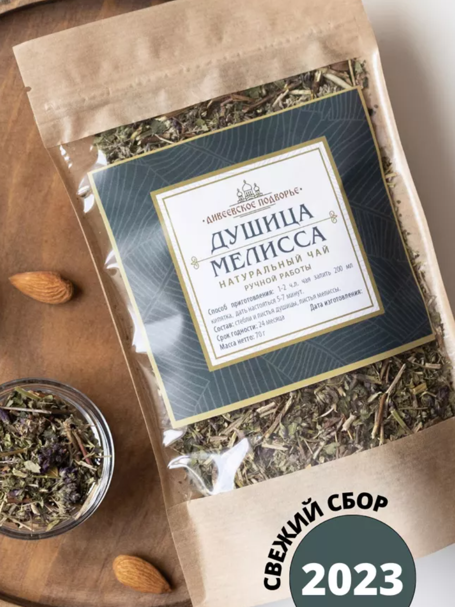
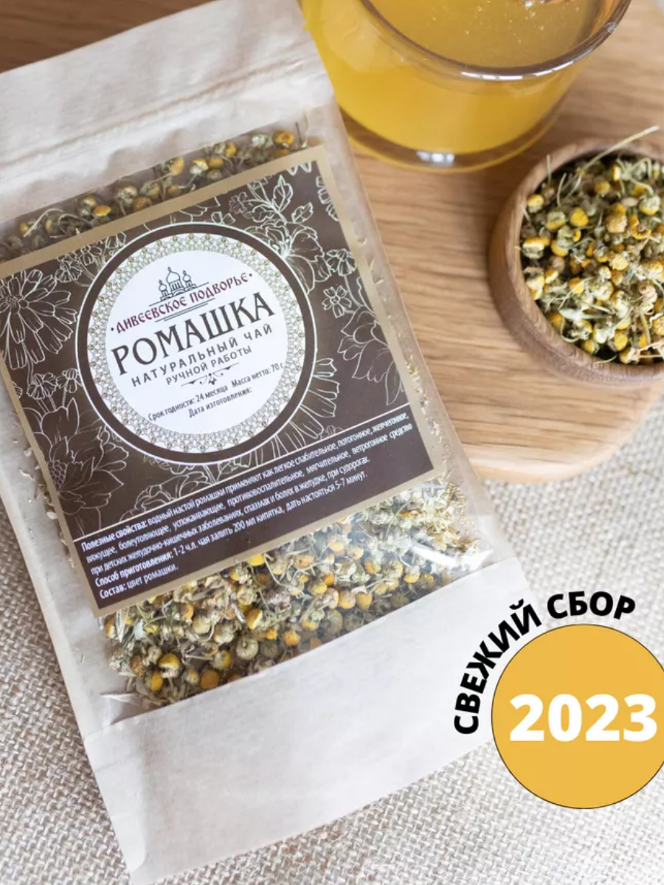
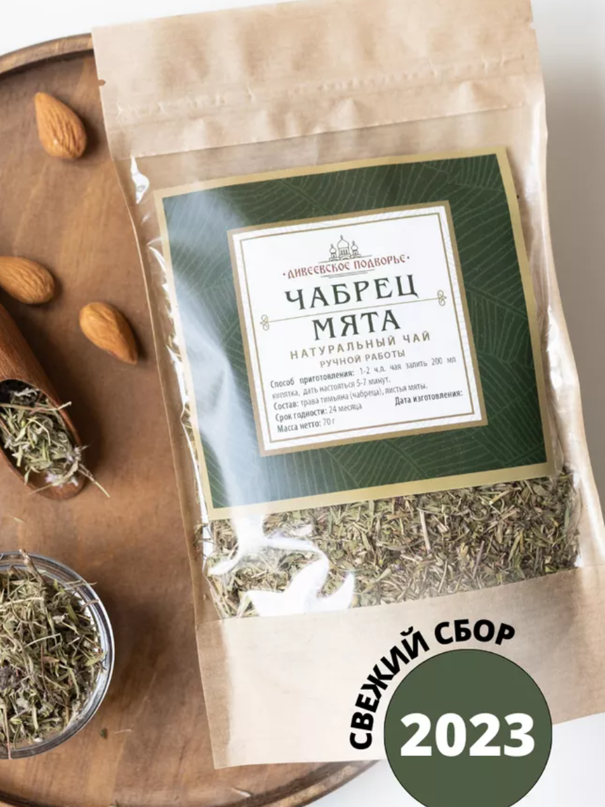

Натуральный чай
Ручной работы
Травяной чай (таволга)

Травяной чай (таволга) – трава от сорока болезней.
Так издавна называли это растение благодаря его лечебным свойствам.
Таволгу пьют при простудах и заболеваниях органов дыхания.
Сбор травяной очищающий это противовирусное, потогонное и жаропонижающее средство.
Лабазник характеризуется как желчегонный сбор, имеет бактерицидное и противовоспалительное воздействие.
Успокоительный чай улучшает мозговое кровообращение и снижает уровень глюкозы в крови,
снижает артериальное давление. Чай обладает вяжущим эффектом, помогает при диареях.
Сбор трав ТМ "Дивеевское подворье" происходит в экологически чистых районах Горного Крыма, Алтая и Кавказа.
Уже более 5 лет мы производим натуральные чаи для монастырей по всей России.
Вы можете заказать набор для чайной церемонии и насладиться восхитительным ароматом целебных трав.
Также чайный напиток из таволги полезен при пиелонефритах, циститах и ревматизме. Это чай от отеков.
Зверобой сушеный

Зверобой содержит множество витаминов и целебных компонентов, которые позволяют широко применять
это лекарственное растение. Витамин Е помогает защитить организм от разрушительного действия свободных
радикалов. Каротин необходим для зрения, обновления клеток кожи, борьбы с вирусами и бактериями.
Дубильные вещества способствуют очищению от инфекций, снимают воспаление и ускоряют заживление.
Никотиновая кислота поддерживает правильную работу сердца и нервной системы. Витамин С повышает иммунитет,
способствует восстановлению и обновлению хрящей и связок. Гиперицин и гиперфорин обладают антидепрессивным
действием. Гиперозид и рутин укрепляют стенки сосудов. Фитонциды - растительные «антибиотики»,
обладают мощным противомикробным действием. Зверобой сушеный используют в качестве антибактериального и
антисептического, болеутоляющего и ранозаживляющего, противоревматического и мочегонного средства.
А также используют в качестве желчегонного, вяжущего и противоглистного средства.
Солодка Корень

Солодка корень обладает уникальным составом! Травяной сбор признан официальной медициной.
Многовековая практика доказала эффективность использования корня солодки при острых и хронических
бронхитах, пневмониях и астме. Корень солодки сушеный способствует выведению мокроты, заживляет слизистую
и повышает иммунитет. Его применяют от гриппа и простуды. Солодка голая эффективно очищает организм и
нормализует обмен веществ. Травяной сбор от кашля также обладает противовирусным и спазмолитическим действием,
повышает иммунитет.
Чабрец трава

Чай чабрец – не только вкусный, но и очень полезный! Чай с чабрецом пьют при сухом кашле, для профилактики ОРВИ
и гриппа, для укрепления иммунитета и при заболеваниях ЖКТ, бессоннице и переутомлении.
Чабрец чай обладает согревающим эффектом и отлично утоляет жажду. Мы собираем чабрец для чая в правильное время,
бережно и тщательно перебираем его вручную. Сушка происходит при соблюдении температурного режима, чтобы сохранить
все полезные витамины, макро и микроэлементы для Вашего организма. Тимьян сушеный можно использовать в кулинарии:
добавлять в первые блюда и мясо, рыбу и грибы.
Душица трава сушеная

Настой травы душицы является прекрасным отхаркивающим средством при заболеваниях органов дыхания.
Травяной чай успокаивает нервную систему: помогает при бессоннице, неврозах и истериях.
Чай с душицей уменьшает спазмы желудка, стимулирует секрецию желудочного сока. Травяной сбор для чая нормализует
работу органов пищеварения: двенадцатиперстной кишки и желчного пузыря, печени, желудка, улучшает аппетит.
Лаванда сушеная цветки

Лаванда сушеная оказывает благоприятное влияние при нарушении сна,
стрессах и больших нагрузках. Помогает снизить кровяное давление и облегчить головные боли.
Благодаря высокому содержанию эфирных масел в цветах лавандовый чай поможет расслабиться,
уменьшить тревожность, страх, настроиться на хорошее. Крымская лаванда прекрасно
ароматизирует и очищает воздух. Сушеная лаванда используется для лечебных ванн и мыла,
косметики, саше и свечей. Используется как средство от моли. Лаванда сухоцвет обладает
противосудорожным и мочегонным действием. Цветы лаванды применяют в кулинарии в виде специй
и приправ, их добавляют в выпечку и десерты. Противопоказанием к применению является
индивидуальная непереносимость лаванды. Способ приготовления: 1-2 ч. л. сбора залить 200 мл
кипятка, дать настояться 5-7 мин. Травы и цветы ТМ "Дивеевское подворье" собираются в экологически
чистых районах Горного Крыма, Алтая и Кавказа.
Душица Мелисса трава сушеная

Душица и мелисса - это прекрасное сочетание вкусов и настоящая сокровищница для здоровья!
Является хорошим успокоительным, спазмолитиком. Снижает артериальное давление и убирает головную боль, мигрени.
Оказывает отхаркивающее действие, снимает мышечные спазмы и судороги. Укрепляет иммунитет, а также помогает
избавиться от симптомов сезонной аллергии. Нормализует работу ЖКТ, убирает метеоризм, запоры. Полезен для женского
здоровья: способствует устранению нарушений менструального цикла, избавляет от приливов при климаксе.
Ромашка сушеная цветки

Ромашка аптечная сушеная - настоящая сокровищница для здоровья! Цветки ромашки обладают противовоспалительными и
успокаивающими, спазмолитическими, болеутоляющими и потогонными свойствами. Цветочный чай поможет справиться с
повышенной тревожностью и стрессами. Сбор ромашки оказывает желчегонный и вяжущий, ветрогонный эффект при детских
желудочно-кишечных заболеваниях, спазмах и болях в желудке и при судорогах. Чай лечебный помогает в нормализации
кровообращения и сердечного ритма, стимуляции деятельности головного мозга и регулирует пищеварительную систему,
помогает уменьшить газообразование и бурление.
Чабрец - Мята высокоментольная

Сочетание чабреца и высокоментольной мяты - не только вкусно, но и очень полезно!
Чай с чабрецом пьют при сухом кашле и для профилактики ОРВИ и гриппа, для укрепления иммунитета и при
заболеваниях ЖКТ, бессоннице и переутомлении. Чай чабрец обладает согревающим эффектом и отлично утоляет жажду.
А высокоментольная мята очищает сосуды, быстро понижает давление и активизирует работу мозга, нормализует
пищеварительную функцию. Также мята сушеная быстро избавляет от тошноты, устраняет рвоту и головокружение.
Такой чай отлично тонизирует утром и настраивает на хороший ночной отдых вечером.